EA2236_1215: DIFFERENT score 97.9% pages golden 4 html 7 (pages with text) words golden 2396 html 2492 missing 4 extra 100 MISSING (in the GhostDraft golden, not in the HTML render) [4 4] <= EA 22 36 12 15 Includes copyrighted material of Insurance Services Office, Inc. with its permission Page 4 of 4 [4] <= 4. "Pedestrian" means any person while not [4] <= EA 22 36 12 15 Includes copyrighted material of Insurance Services Office, Inc. with its permission Page 5 of 4 EXTRA (in the HTML render, not in the GhostDraft golden) [7] <= EA 22 36 12 15 Includes copyrighted material of Insurance Services Office, Inc. with its permission Page 1 of 7 [7] <= EA 22 36 12 15 Includes copyrighted material of Insurance Services Office, Inc. with its permission Page 2 of 7 [7] <= EA 22 36 12 15 Includes copyrighted material of Insurance Services Office, Inc. with its permission Page 3 of 7 [7] <= EA 22 36 12 15 Includes copyrighted material of Insurance Services Office, Inc. with its permission Page 4 of 7 [NUMBER CPP 0029008 0 COMMERCIAL] <= POLICY NUMBER: CPP 0029008 00 COMMERCIAL AUTO [EA 36 12 15] <= EA 22 36 12 15 [POLICY] <= (1) Insurance benefits under another policy [AUTO] <= "auto", other than the "covered auto", with [EA 2 36 12 15 INCLUDES COPYRIGHTED MATERIAL INSURANCE SERVICES OFFICE INC ITS PERMISSION PAGE 7] <= EA 22 36 12 15 Includes copyrighted material of Insurance Services Office, Inc. with its permission Page 5 of 7 [POLICY NUMBER CPP 0029008 0 COMMERCIAL AUTO] <= POLICY NUMBER: CPP 0029008 00 COMMERCIAL AUTO [EA 2 36 12 15] <= EA 22 36 12 15 [2] <= (2) We are entitled to the proceeds of any [WITH] <= connection with the recovery. [EA 2 36 12 15 INCLUDES COPYRIGHTED MATERIAL INSURANCE SERVICES OFFICE INC WITH ITS PERMISSION PAGE 6 7] <= EA 22 36 12 15 Includes copyrighted material of Insurance Services Office, Inc. with its permission Page 6 of 7 [POLICY NUMBER CPP 0029008 0 COMMERCIAL AUTO] <= POLICY NUMBER: CPP 0029008 00 COMMERCIAL AUTO [EA 2 36 12 15] <= EA 22 36 12 15 [OF] <= Costs to the "insured" of the arbitration [OF] <= all other costs of arbitration shall be [2] <= (2) Unless both parties agree otherwise, [OF] <= which the "insured" lives. Local rules of [OF] <= by two of the arbitrators will be binding. [EA 2 36 12 15 INCLUDES COPYRIGHTED MATERIAL OF INSURANCE SERVICES OFFICE INC WITH ITS PERMISSION PAGE 7 OF 7] <= EA 22 36 12 15 Includes copyrighted material of Insurance Services Office, Inc. with its permission Page 7 of 7 golden C:\src\fact-docgen\src\Moe.Commercial.Documents.Generation.Integration.Tests\TestData\Snapshots\EA2236_1215\GoldenSnapshot.txt template C:\src\fact-poc\output\ghostdraft\batch\EA2236-1215.json serverxml C:\src\fact-poc\output\ghostdraft\serverxml\EA2236_1215\ServerXml.xml
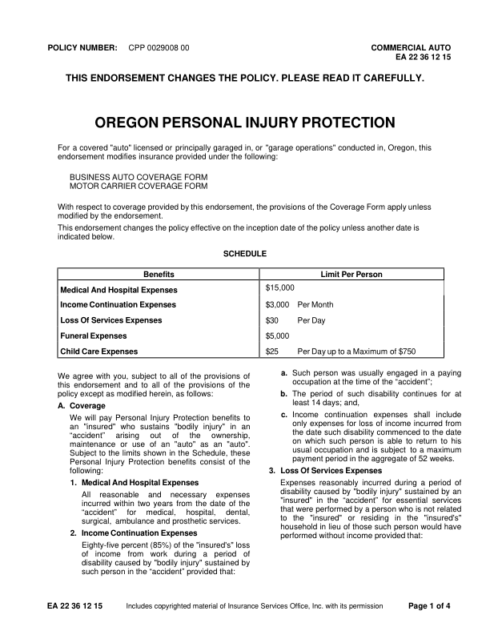
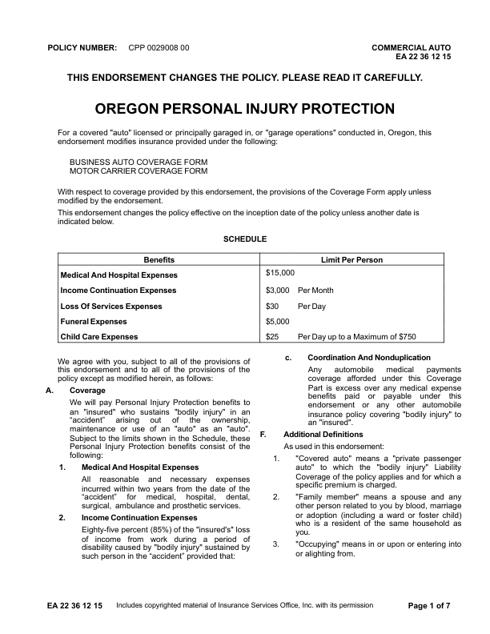
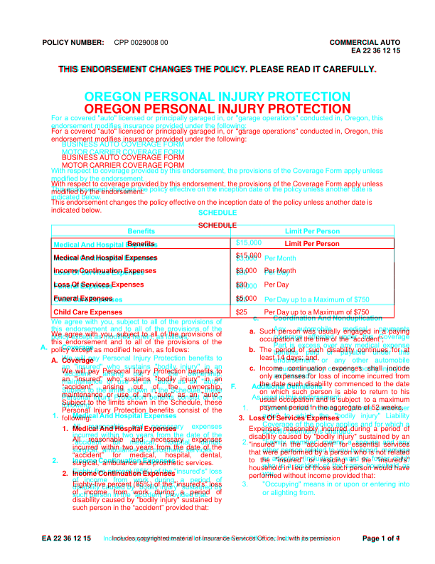
moved OREGON (+0.3, -17.5)pt moved PERSONAL (+0.4, -17.5)pt moved INJURY (+0.4, -17.5)pt moved PROTECTION (-0.2, -17.5)pt moved For (+0.0, -18.9)pt moved a (+0.0, -18.9)pt moved covered (+0.0, -18.9)pt moved "auto" (+0.0, -18.9)pt moved licensed (-0.0, -18.9)pt moved or (-0.0, -18.9)pt moved principally (+0.0, -18.9)pt moved garaged (+0.0, -18.9)pt moved in, (+0.0, -18.9)pt moved or (+0.0, -18.9)pt moved "garage (+0.0, -18.9)pt moved operations" (+0.0, -18.9)pt moved conducted (+0.0, -18.9)pt moved in, (+0.0, -18.9)pt moved Oregon, (+0.0, -18.9)pt moved this (+0.0, -18.9)pt moved endorsement (+0.0, -18.7)pt moved modifies (-0.0, -18.7)pt moved insurance (-0.0, -18.7)pt moved provided (-0.0, -18.7)pt moved under (-0.0, -18.7)pt moved the (-0.0, -18.7)pt moved following: (-0.0, -18.7)pt moved BUSINESS (-0.0, -19.3)pt moved AUTO (+0.0, -19.3)pt moved COVERAGE (-0.1, -19.3)pt moved FORM (-0.1, -19.3)pt moved MOTOR (-0.0, -19.0)pt moved CARRIER (-0.1, -19.0)pt moved COVERAGE (-0.1, -19.0)pt moved FORM (-0.2, -19.0)pt moved With (+0.0, -18.7)pt moved respect (+0.0, -18.7)pt moved to (+0.1, -18.7)pt moved coverage (+0.1, -18.7)pt moved provided (+0.0, -18.7)pt moved by (+0.0, -18.7)pt moved this (+0.1, -18.7)pt moved endorsement, (+0.0, -18.7)pt moved the (+0.1, -18.7)pt moved provisions (+0.0, -18.7)pt moved of (+0.0, -18.7)pt moved the (+0.1, -18.7)pt moved Coverage (+0.0, -18.7)pt moved Form (+0.1, -18.7)pt moved apply (+0.1, -18.7)pt moved unless (+0.1, -18.7)pt moved modified (+0.0, -19.3)pt moved by (-0.0, -19.3)pt moved the (-0.0, -19.3)pt moved endorsement. (-0.0, -19.3)pt moved This (+0.0, -19.4)pt moved endorsement (+0.0, -19.4)pt moved changes (+0.1, -19.4)pt moved the (+0.1, -19.4)pt moved policy (+0.1, -19.4)pt moved effective (+0.0, -19.4)pt moved on (-0.1, -19.4)pt moved the (-0.1, -19.4)pt moved inception (-0.1, -19.4)pt moved date (-0.1, -19.4)pt moved of (-0.1, -19.4)pt moved the (-0.0, -19.4)pt moved policy (-0.1, -19.4)pt moved unless (-0.0, -19.4)pt moved another (-0.0, -19.4)pt moved date (+0.0, -19.4)pt moved is (+0.0, -19.4)pt moved indicated (+0.0, -19.0)pt moved below. (-0.0, -19.0)pt moved SCHEDULE (+0.0, -18.7)pt moved Benefits (+0.4, -18.2)pt moved Limit (+0.4, -18.2)pt moved Per (+0.4, -18.2)pt moved Person (+0.4, -18.2)pt moved $15,000 (+0.2, -18.3)pt moved Medical (+0.2, -18.3)pt moved And (+0.3, -18.3)pt moved Hospital (+0.3, -18.3)pt moved Expenses (+0.3, -18.3)pt moved Income (+0.2, -17.8)pt moved Continuation (+0.3, -17.8)pt moved Expenses (+0.3, -17.8)pt moved $3,000 (+0.2, -17.8)pt moved Per (+0.4, -17.8)pt moved Month (+0.5, -17.8)pt moved Loss (+0.2, -17.9)pt moved Of (+0.3, -17.9)pt moved Services (+0.3, -17.9)pt moved Expenses (+0.3, -17.9)pt moved $30 (+0.2, -18.0)pt moved Per (+0.4, -18.0)pt moved Day (+0.4, -18.0)pt moved Funeral (+0.2, -17.9)pt moved Expenses (+0.3, -17.9)pt moved $5,000 (+0.2, -17.9)pt moved Child (+0.2, -18.5)pt moved Care (+0.3, -18.5)pt moved Expenses (+0.3, -18.5)pt moved $25 (+0.2, -18.6)pt moved Per (+0.4, -18.6)pt moved Day (+0.5, -18.6)pt moved up (+0.4, -18.6)pt moved to (+0.4, -18.6)pt moved a (+0.5, -18.6)pt moved Maximum (+0.4, -18.6)pt moved of (+0.4, -18.6)pt moved $750 (+0.5, -18.6)pt moved We (+0.0, -18.5)pt moved agree (-0.2, -18.5)pt moved with (-0.1, -18.5)pt moved you, (-0.1, -18.5)pt moved subject (-0.1, -18.5)pt moved to (-0.1, -18.5)pt moved all (-0.1, -18.5)pt moved of (-0.0, -18.5)pt moved the (-0.0, -18.5)pt moved provisions (+0.0, -18.5)pt moved of (+0.0, -18.5)pt moved this (+0.0, -19.0)pt moved endorsement (+0.0, -19.0)pt moved and (+0.0, -19.0)pt moved to (+0.0, -19.0)pt moved all (+0.0, -19.0)pt moved of (+0.1, -19.0)pt moved the (+0.1, -19.0)pt moved provisions (+0.0, -19.0)pt moved of (+0.1, -19.0)pt moved the (+0.1, -19.0)pt moved policy (+0.0, -18.7)pt moved except (+0.0, -18.7)pt moved as (+0.0, -18.7)pt moved modified (+0.0, -18.7)pt moved herein, (+0.0, -18.7)pt moved as (+0.0, -18.7)pt moved follows: (+0.0, -18.7)pt moved A. (-14.9, -18.7)pt moved Coverage (-0.0, -18.7)pt moved We (-0.0, -18.7)pt moved will (-0.1, -18.7)pt moved pay (-0.1, -18.7)pt moved Personal (-0.0, -18.7)pt moved Injury (-0.0, -18.7)pt moved Protection (-0.0, -18.7)pt moved benefits (+0.0, -18.7)pt moved to (+0.0, -18.7)pt moved an (-0.0, -18.5)pt moved "insured" (+0.0, -18.5)pt moved who (+0.0, -18.5)pt moved sustains (+0.0, -18.5)pt moved "bodily (+0.0, -18.5)pt moved injury" (+0.1, -18.5)pt moved in (+0.0, -18.5)pt moved an (+0.0, -18.5)pt moved to (+39.7, -22.5)pt moved “accident” (-0.0, -19.0)pt moved arising (+0.0, -19.0)pt moved out (+0.1, -19.0)pt moved of (+0.0, -19.0)pt moved the (+0.1, -19.0)pt moved ownership, (+0.1, -19.0)pt moved maintenance (-0.0, -18.7)pt moved or (-0.0, -18.7)pt moved use (+0.0, -18.7)pt moved of (-0.0, -18.7)pt moved an (-0.0, -18.7)pt moved "auto" (+0.1, -18.7)pt moved as (+0.0, -18.7)pt moved an (+0.1, -18.7)pt moved "auto". (+0.0, -18.7)pt moved Subject (-0.0, -18.5)pt moved to (+0.1, -18.5)pt moved the (+0.0, -18.5)pt moved limits (+0.0, -18.5)pt moved shown (+0.1, -18.5)pt moved in (+0.0, -18.5)pt moved the (+0.1, -18.5)pt moved Schedule, (+0.0, -18.5)pt moved these (+0.1, -18.5)pt moved Personal (-0.0, -19.0)pt moved Injury (+0.0, -19.0)pt moved Protection (+0.1, -19.0)pt moved benefits (-0.0, -19.0)pt moved consist (+0.0, -19.0)pt moved of (+0.0, -19.0)pt moved the (+0.0, -19.0)pt moved following: (-0.0, -18.7)pt moved 1. (-14.1, -18.7)pt moved Medical (-0.0, -18.7)pt moved And (+0.0, -18.7)pt moved Hospital (+0.1, -18.7)pt moved Expenses (+0.1, -18.7)pt moved "bodily (+29.0, -29.7)pt moved injury" (+33.3, -29.7)pt moved All (+0.0, -18.7)pt moved reasonable (+0.1, -18.7)pt moved and (+0.0, -18.7)pt moved necessary (+0.1, -18.7)pt moved expenses (+0.1, -18.7)pt moved incurred (+0.0, -18.5)pt moved within (+0.0, -18.5)pt moved two (+0.0, -18.5)pt moved years (+0.0, -18.5)pt moved from (-0.0, -18.5)pt moved the (+0.0, -18.5)pt moved date (+0.0, -18.5)pt moved of (+0.0, -18.5)pt moved the (+0.1, -18.5)pt moved “accident” (+0.0, -19.0)pt moved for (+0.1, -19.0)pt moved medical, (+0.1, -19.0)pt moved hospital, (+0.1, -19.0)pt moved dental, (+0.1, -19.0)pt moved surgical, (+0.0, -18.7)pt moved ambulance (+0.0, -18.7)pt moved and (+0.0, -18.7)pt moved prosthetic (+0.0, -18.7)pt moved services. (-0.0, -18.7)pt moved person (-96.7, -25.7)pt moved 2. (-14.2, -18.7)pt moved Income (-0.0, -18.7)pt moved Continuation (+0.1, -18.7)pt moved Expenses (+0.1, -18.7)pt moved Eighty-five (+0.0, -18.7)pt moved percent (+0.0, -18.7)pt moved (85%) (+0.0, -18.7)pt moved of (+0.1, -18.7)pt moved the (+0.1, -18.7)pt moved "insured's" (+0.1, -18.7)pt moved loss (+0.1, -18.7)pt moved of (+0.0, -18.5)pt moved income (+0.1, -18.5)pt moved from (+0.1, -18.5)pt moved work (+0.1, -18.5)pt moved during (+0.0, -18.5)pt moved a (+0.1, -18.5)pt moved period (+0.1, -18.5)pt moved of (+0.0, -18.5)pt moved disability (+0.0, -19.0)pt moved caused (+0.0, -19.0)pt moved by (+0.1, -19.0)pt moved "bodily (+0.1, -19.0)pt moved injury" (+0.0, -19.0)pt moved sustained (+0.1, -19.0)pt moved by (+0.1, -19.0)pt moved such (+0.0, -18.7)pt moved person (-0.0, -18.7)pt moved in (-0.0, -18.7)pt moved the (-0.0, -18.7)pt moved “accident” (-0.0, -18.7)pt moved provided (-0.0, -18.7)pt moved that: (-0.0, -18.7)pt moved Includes (-12.2, -0.8)pt moved copyrighted (-12.2, -0.8)pt moved material (-12.2, -0.8)pt moved of (-12.2, -0.8)pt moved Insurance (-12.1, -0.8)pt moved Services (-12.1, -0.8)pt moved Office, (-12.2, -0.8)pt moved Inc. (-12.3, -0.8)pt moved with (-12.3, -0.8)pt moved its (-12.3, -0.8)pt moved permission (-12.3, -0.8)pt missing h rule at 334.9 (72.5-554.0) missing h rule at 349.6 (72.5-554.0) missing h rule at 446.9 (72.5-554.0) missing v rule at 72.0 (335.4-446.4) missing v rule at 324.0 (335.4-446.4) missing v rule at 554.5 (335.4-446.4) extra h rule at 316.1 (72.0-555.0) extra h rule at 331.1 (72.0-555.0) extra h rule at 427.9 (72.0-555.0) extra v rule at 72.4 (315.8-428.2) extra v rule at 324.4 (315.8-428.2) extra v rule at 554.6 (315.8-428.2)
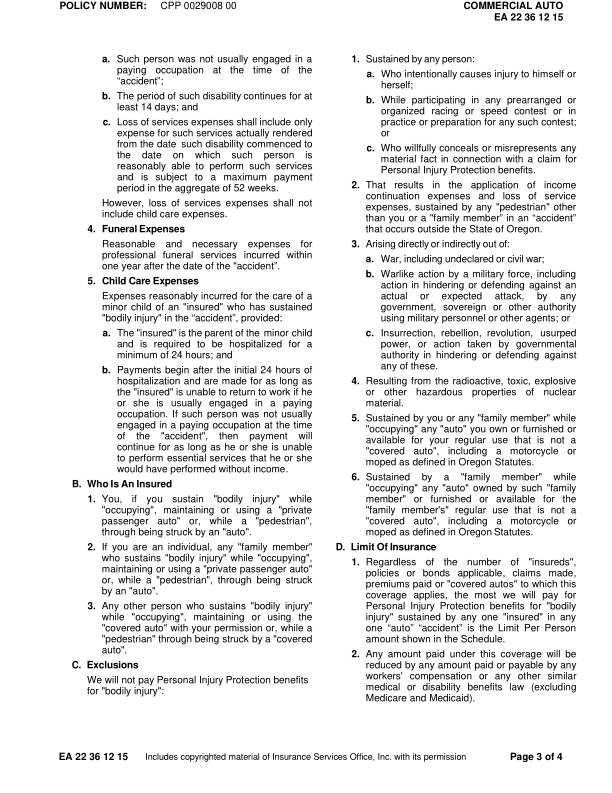
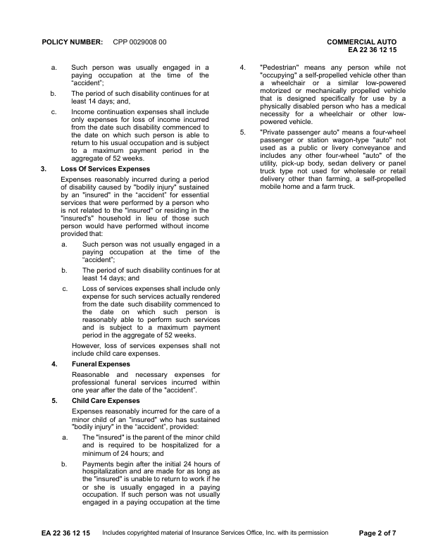
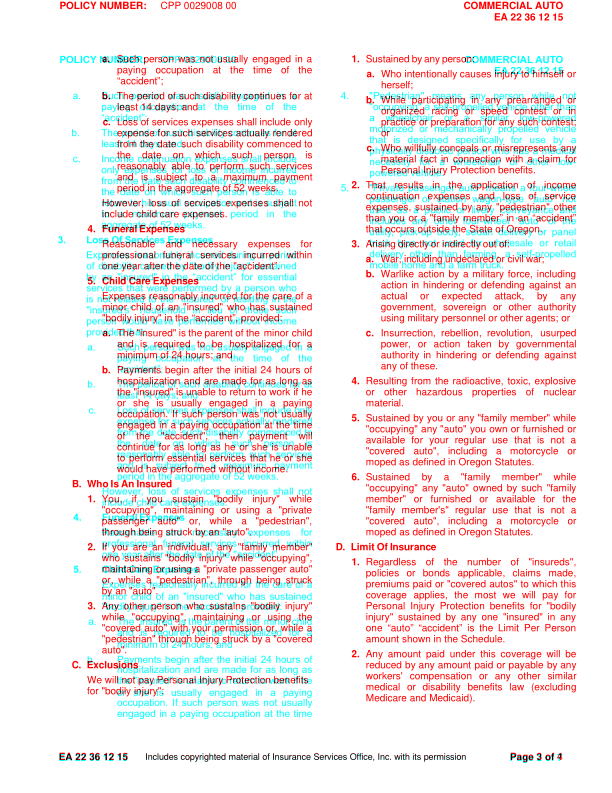
moved POLICY (-0.0, +54.0)pt moved NUMBER: (-0.2, +54.0)pt moved CPP (-0.0, +54.0)pt moved 0029008 (-0.2, +54.0)pt moved 00 (-0.2, +54.0)pt moved COMMERCIAL (+0.8, +54.0)pt moved AUTO (+0.2, +54.0)pt moved EA (+0.4, +53.7)pt moved 22 (+0.0, +53.7)pt moved 36 (+0.0, +53.7)pt moved 12 (+0.0, +53.7)pt moved 15 (+0.0, +53.7)pt moved a. (-29.4, +36.8)pt moved Such (-15.6, +36.8)pt moved person (-12.5, +36.8)pt moved was (-9.6, +36.8)pt moved usually (-24.3, +36.8)pt moved engaged (-21.3, +36.8)pt moved in (-18.3, +36.8)pt moved a (-15.3, +36.8)pt moved any (+45.8, +36.8)pt moved paying (-15.8, +37.0)pt moved occupation (-15.6, +37.0)pt moved at (-15.6, +37.0)pt moved the (-15.5, +37.0)pt moved time (-15.5, +37.0)pt moved of (-15.5, +37.0)pt moved the (-15.3, +37.0)pt moved or (-123.0, +43.5)pt moved b. (-30.6, +36.5)pt moved The (-15.6, +36.5)pt moved period (-15.5, +36.5)pt moved of (-15.5, +36.5)pt moved such (-15.4, +36.5)pt moved disability (-15.5, +36.5)pt moved continues (-15.4, +36.5)pt moved for (-15.5, +36.5)pt moved at (-15.4, +36.5)pt moved b. (-278.8, +283.8)pt moved least (+0.0, +288.1)pt moved 14 (-0.0, +288.1)pt moved days; (-0.0, +288.1)pt moved and (-0.0, +288.1)pt moved c. (-14.3, +288.0)pt moved Loss (+0.1, +288.1)pt moved of (+0.1, +288.1)pt moved services (+0.1, +288.1)pt moved expenses (+0.1, +288.1)pt moved shall (+0.1, +288.1)pt moved include (+0.1, +288.1)pt moved only (-0.0, +288.1)pt moved expense (+0.0, +287.6)pt moved for (+0.1, +287.6)pt moved such (+0.0, +287.6)pt moved services (+0.0, +287.6)pt moved actually (+0.1, +287.6)pt moved rendered (+0.0, +287.6)pt moved from (+0.0, +287.8)pt moved the (+0.0, +287.8)pt moved date (+0.0, +287.8)pt moved such (+0.1, +287.8)pt moved disability (+0.0, +287.8)pt moved commenced (+0.1, +287.8)pt moved to (+0.0, +287.8)pt moved the (+0.0, +288.1)pt moved date (+0.1, +288.1)pt moved on (-0.0, +288.1)pt moved which (-0.0, +288.1)pt moved such (+0.1, +288.1)pt moved person (+0.0, +288.1)pt moved is (+0.0, +288.1)pt moved reasonably (+0.0, +287.6)pt moved able (+0.0, +287.6)pt moved to (+0.1, +287.6)pt moved perform (+0.0, +287.6)pt moved such (+0.0, +287.6)pt moved services (+0.1, +287.6)pt moved and (+0.0, +287.8)pt moved is (+0.1, +287.8)pt moved subject (+0.1, +287.8)pt moved to (+0.1, +287.8)pt moved a (+0.0, +287.8)pt moved maximum (+0.1, +287.8)pt moved payment (+0.1, +287.8)pt moved period (+0.0, +288.1)pt moved in (-0.0, +288.1)pt moved the (-0.0, +288.1)pt moved aggregate (-0.0, +288.1)pt moved of (-0.0, +288.1)pt moved 52 (-0.0, +288.1)pt moved weeks. (-0.0, +288.1)pt moved However, (+0.1, +288.1)pt moved loss (-0.4, +288.1)pt moved of (-0.3, +288.1)pt moved services (-0.3, +288.1)pt moved expenses (-0.1, +288.1)pt moved shall (-0.1, +288.1)pt moved not (+0.1, +288.1)pt moved include (+0.0, +287.6)pt moved child (-0.0, +287.6)pt moved care (-0.0, +287.6)pt moved expenses. (-0.0, +287.6)pt moved 4. (-14.3, +287.5)pt moved Funeral (-0.0, +287.6)pt moved Expenses (+0.0, +287.6)pt moved Reasonable (+0.0, +287.6)pt moved and (+0.0, +287.6)pt moved necessary (+0.1, +287.6)pt moved expenses (+0.0, +287.6)pt moved for (+0.1, +287.6)pt moved professional (+0.0, +287.8)pt moved funeral (+0.1, +287.8)pt moved services (+0.0, +287.8)pt moved incurred (+0.1, +287.8)pt moved within (+0.1, +287.8)pt moved one (+0.0, +288.1)pt moved year (+0.1, +288.1)pt moved after (+0.1, +288.1)pt moved the (+0.0, +288.1)pt moved date (+0.0, +288.1)pt moved of (+0.0, +288.1)pt moved the (+0.0, +288.1)pt moved "accident”. (+0.0, +288.1)pt moved 5. (-14.3, +288.0)pt moved Child (-0.0, +288.1)pt moved Care (+0.0, +288.1)pt moved Expenses (+0.0, +288.1)pt moved Expenses (+0.0, +288.1)pt moved reasonably (+0.1, +288.1)pt moved incurred (+0.0, +288.1)pt moved for (+0.1, +288.1)pt moved the (+0.0, +288.1)pt moved care (+0.1, +288.1)pt moved of (+0.1, +288.1)pt moved a (+0.0, +288.1)pt moved minor (+0.0, +288.3)pt moved child (+0.0, +288.3)pt moved of (+0.0, +288.3)pt moved an (+0.1, +288.3)pt moved "insured" (+0.1, +288.3)pt moved who (+0.1, +288.3)pt moved has (+0.1, +288.3)pt moved sustained (+0.1, +288.3)pt moved "bodily (+0.0, +287.8)pt moved injury" (+0.0, +287.8)pt moved in (+0.0, +287.8)pt moved the (-0.0, +287.8)pt moved “accident”, (-0.0, +287.8)pt moved provided: (-0.0, +287.8)pt moved a. (-14.4, +287.8)pt moved The (+0.0, +287.8)pt moved "insured" (+0.1, +287.8)pt moved is (+0.1, +287.8)pt moved the (+0.1, +287.8)pt moved parent (+0.1, +287.8)pt moved of (+0.1, +287.8)pt moved the (+0.0, +287.8)pt moved minor (+0.1, +287.8)pt moved child (+0.1, +287.8)pt moved and (+0.0, +288.1)pt moved is (+0.0, +288.1)pt moved required (+0.0, +288.1)pt moved to (+0.1, +288.1)pt moved be (+0.1, +288.1)pt moved hospitalized (+0.1, +288.1)pt moved for (+0.1, +288.1)pt moved a (+0.1, +288.1)pt moved minimum (+0.0, +288.3)pt moved of (-0.0, +288.3)pt moved 24 (-0.0, +288.3)pt moved hours; (-0.0, +288.3)pt moved and (-0.0, +288.3)pt moved b. (-15.0, +288.3)pt moved Payments (+0.1, +288.3)pt moved begin (+0.2, +288.3)pt moved after (+0.2, +288.3)pt moved the (+0.1, +288.3)pt moved initial (+0.1, +288.3)pt moved 24 (+0.1, +288.3)pt moved hours (+0.0, +288.3)pt moved of (+0.1, +288.3)pt moved hospitalization (+0.0, +287.8)pt moved and (+0.0, +287.8)pt moved are (+0.1, +287.8)pt moved made (+0.1, +287.8)pt moved for (+0.0, +287.8)pt moved as (+0.1, +287.8)pt moved long (+0.1, +287.8)pt moved as (+0.0, +287.8)pt moved the (+0.0, +288.1)pt moved "insured" (+0.0, +288.1)pt moved is (+0.0, +288.1)pt moved unable (+0.0, +288.1)pt moved to (+0.1, +288.1)pt moved return (+0.1, +288.1)pt moved to (+0.0, +288.1)pt moved work (+0.1, +288.1)pt moved if (+0.1, +288.1)pt moved he (+0.1, +288.1)pt moved or (-248.8, +299.3)pt moved she (+0.0, +288.3)pt moved is (+0.1, +288.3)pt moved usually (+0.1, +288.3)pt moved engaged (+0.1, +288.3)pt moved in (+0.0, +288.3)pt moved a (+0.1, +288.3)pt moved paying (+0.1, +288.3)pt moved occupation. (+0.0, +287.8)pt moved If (+0.1, +287.8)pt moved such (+0.1, +287.8)pt moved person (+0.0, +287.8)pt moved was (+0.0, +287.8)pt moved not (+0.1, +287.8)pt moved usually (+0.1, +287.8)pt moved engaged (+0.0, +288.1)pt moved in (+0.1, +288.1)pt moved a (+0.0, +288.1)pt moved paying (+0.0, +288.1)pt moved occupation (+0.1, +288.1)pt moved at (+0.1, +288.1)pt moved the (+0.1, +288.1)pt moved time (+0.0, +288.1)pt size a. 9.9 -> 10.0pt size b. 9.9 -> 10.0pt size b. 9.9 -> 10.0pt size c. 9.9 -> 10.0pt size a. 9.9 -> 10.0pt size b. 9.9 -> 10.0pt
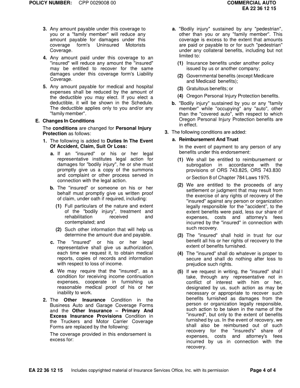
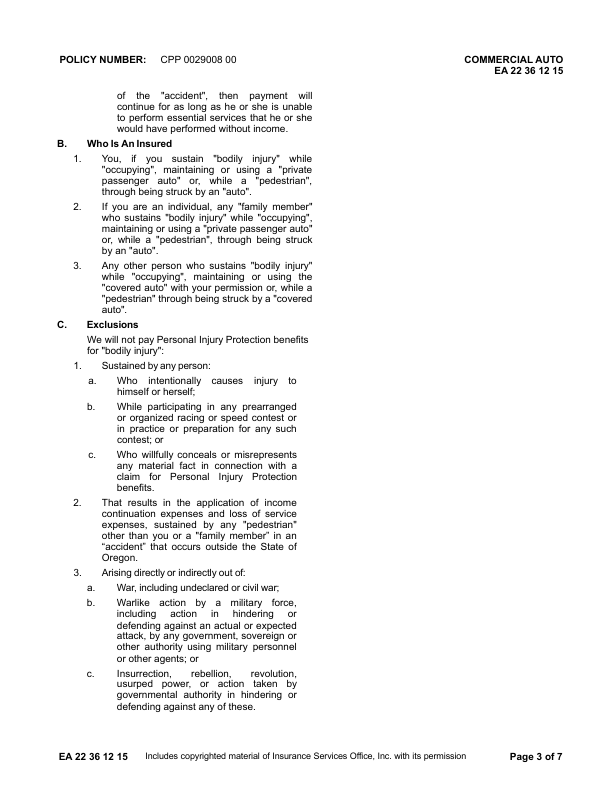
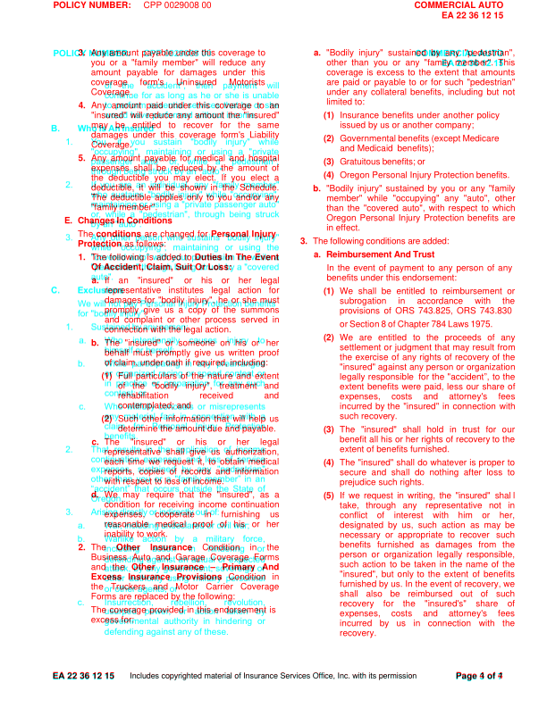
moved POLICY (-0.0, +54.0)pt moved NUMBER: (-0.2, +54.0)pt moved CPP (-0.0, +54.0)pt moved 0029008 (-0.2, +54.0)pt moved 00 (-0.2, +54.0)pt moved COMMERCIAL (+0.8, +54.0)pt moved AUTO (+0.2, +54.0)pt moved EA (+0.4, +53.7)pt moved 22 (+0.0, +53.7)pt moved 36 (+0.0, +53.7)pt moved 12 (+0.0, +53.7)pt moved 15 (+0.0, +53.7)pt moved 3. (-14.3, +207.0)pt moved Any (+0.1, +207.0)pt moved to (-0.4, +321.8)pt moved sustained (-280.2, +465.8)pt moved by (-279.0, +465.8)pt moved any (-277.8, +465.8)pt moved you (+50.7, +466.0)pt moved or (+50.0, +466.0)pt moved a (+49.3, +466.0)pt moved "family (+48.6, +466.0)pt moved any (-117.4, +565.8)pt moved or (+100.8, +277.8)pt moved other (-84.4, +289.1)pt moved in (-77.4, +337.1)pt moved or (-92.0, +332.1)pt moved against (-259.3, +295.3)pt moved any (-259.4, +295.3)pt moved of (+15.4, +285.3)pt size 3. 9.9 -> 10.0pt
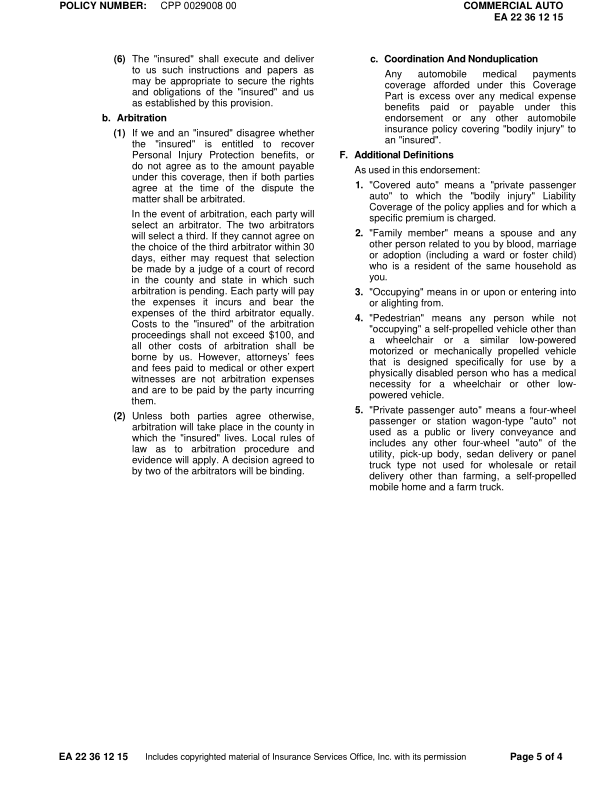
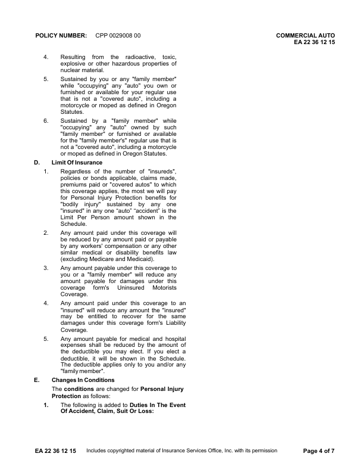
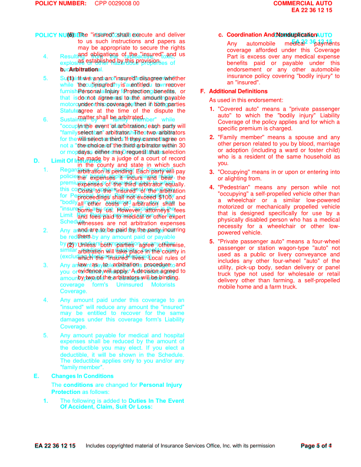
moved POLICY (-0.0, +54.0)pt moved NUMBER: (-0.2, +54.0)pt moved CPP (-0.0, +54.0)pt moved 0029008 (-0.2, +54.0)pt moved 00 (-0.2, +54.0)pt moved COMMERCIAL (+0.8, +54.0)pt moved AUTO (+0.2, +54.0)pt moved EA (+0.4, +53.7)pt moved 22 (+0.0, +53.7)pt moved 36 (+0.0, +53.7)pt moved 12 (+0.0, +53.7)pt moved 15 (+0.0, +53.7)pt moved "insured" (-52.0, +294.8)pt moved Any (-283.0, +316.5)pt moved under (-291.0, +305.5)pt moved this (-293.5, +305.5)pt moved any (-308.5, +305.8)pt moved paid (-203.4, +294.8)pt moved or (-210.2, +294.8)pt moved payable (-217.1, +294.8)pt moved or (-210.3, +295.1)pt moved any (-215.8, +295.1)pt moved other (-221.2, +295.1)pt moved to (-279.2, +320.8)pt moved an (+123.3, +376.1)pt moved "insured" (-90.9, +387.3)pt moved the (+122.9, +376.3)pt moved "insured" (+117.4, +376.3)pt moved entitled (-73.2, +386.8)pt moved to (-74.6, +386.8)pt moved recover (-76.0, +386.8)pt moved Personal (+104.1, +498.1)pt moved Injury (+103.6, +498.1)pt moved Protection (-122.2, +509.3)pt moved as (-56.4, +498.3)pt moved to (-4.2, +513.3)pt moved In (+120.1, +465.3)pt moved The (+37.3, +454.3)pt size Personal 10.0 -> 10.0pt size Injury 10.0 -> 10.0pt size Protection 10.0 -> 10.0pt size In 10.0 -> 10.0pt size The 10.0 -> 10.0pt
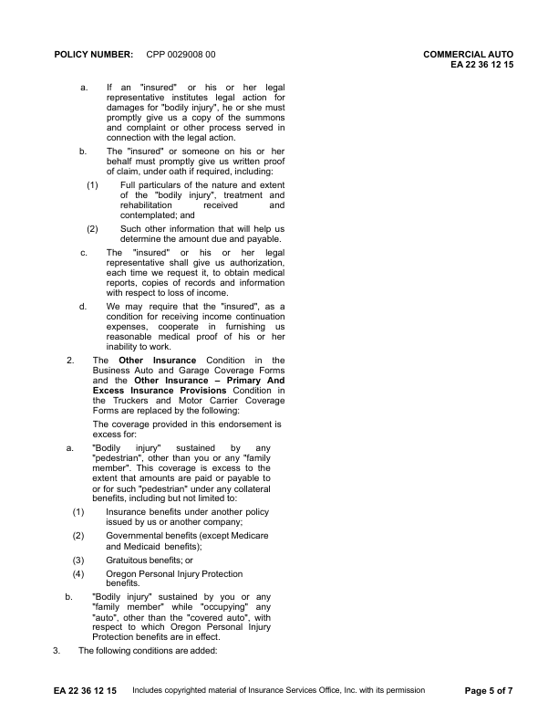
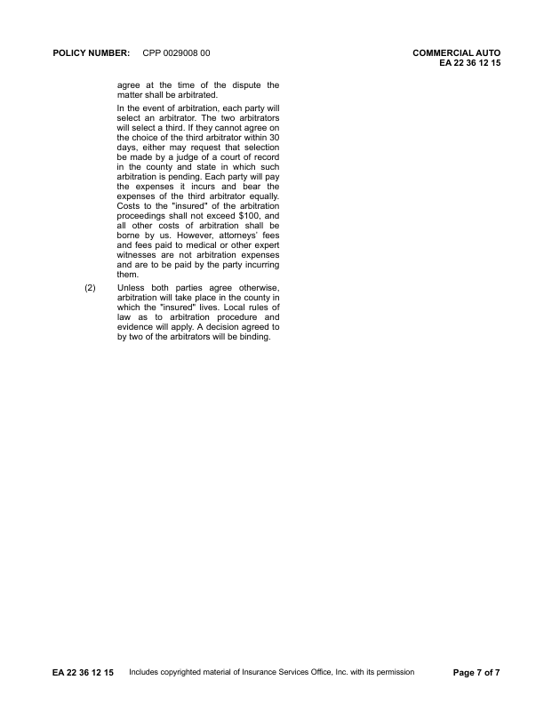